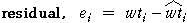

Linear Model
Our first attempt at modelling how slug weight is related to slug length uses a straight line of the form
Such a line could be used to predict any slug's weight, based on its length. For example, the i'th slug's weight might be predicted as
and the corresponding error for this prediction is

Least Squares
How should we position such a line? The method of least squares positions the line to minimise the residual sum of squares,
(Section 1.3 of the CAST e-book about regression models gives more information about the method of least squares.)
The least squares line is superimposed on the slug scatterplot on the left below. Click any cross to see the fitted weight and residual for that slug.
Problem with Linear Model
The linear model underestimates the weights of both very short and very long slugs (residuals are positive) — indeed, the weights of slugs shorter than 2cm are predicted by the model to be negative! In the same way, the model overestimates the weights of most slugs whose lengths are between 3cm and 6cm (negative residuals). The curvature in the relationship is particularly evident from the scatterplot of residuals against length on the right of the diagram above.